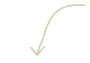
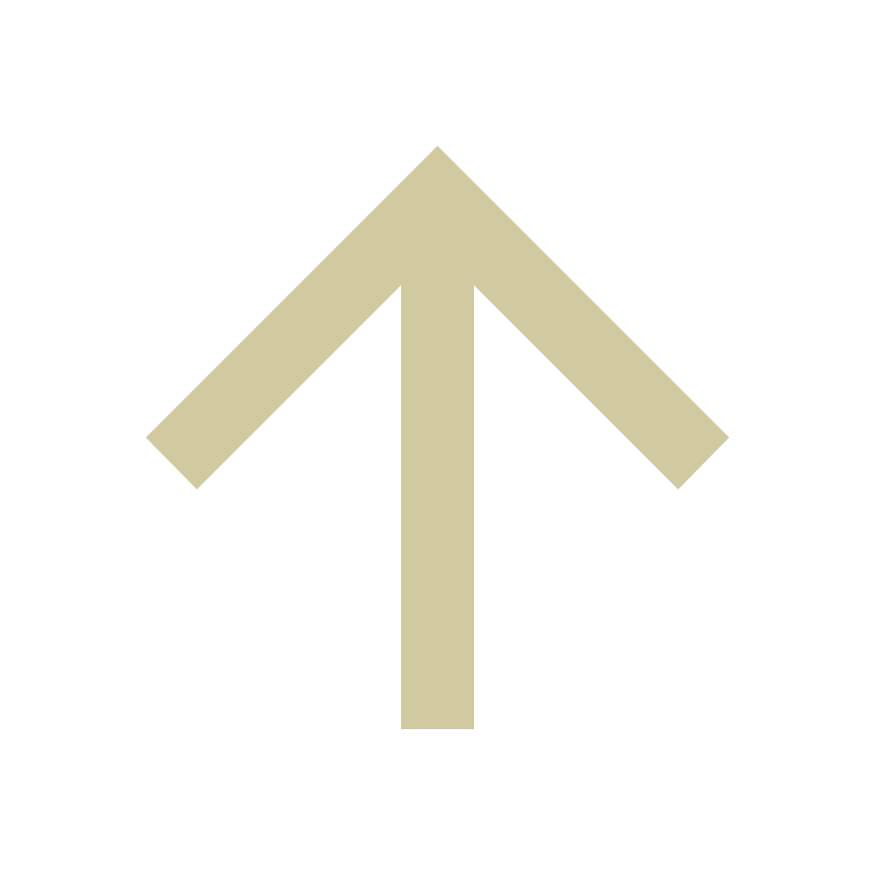

VISION
Innovation and technology that benefit people and help make the world a better place with freedom of innovation at any cost.
PART A / QUALIFICATION PORTFOLIO
What I believe in and what I hope to do.

05 /
I believe technology should help people and benefit society, not just the technology industry.
I also believe that freedom is what the world needed and the freedom to innovate.
06 /
VISION
Innovation and technology that benefit people and help make the world a better place with freedom of innovation at any cost.
MISSION
Keep learning as a web developer and work toward contributing to the open-source community.
And get a job at a big company to also spread awareness how innovation should never harm the people.
